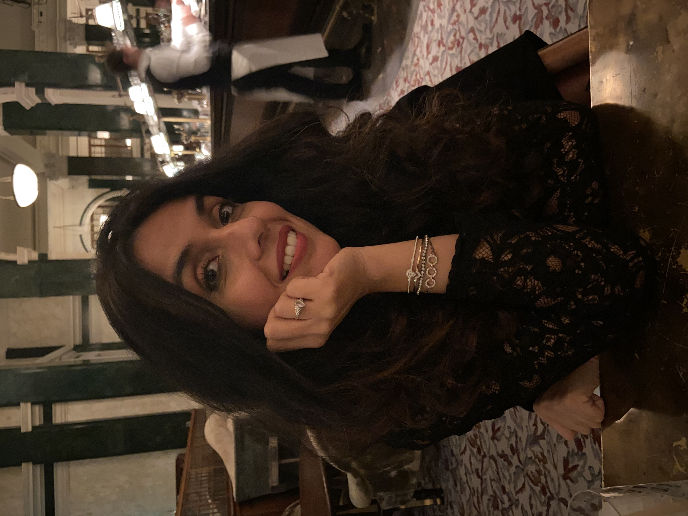

Mentoring & Editorial Services
Ayisha Malik has been a creative writing lecturer at Winchester University and has led fiction courses for Faber Academy and Curtis Brown Creative. She regularly teaches writing workshops around the country and works with writers one-to-one.

Banner text to follow
Editorial Services
Manuscript Read Through & Feedback
A thorough read of your manuscript with detailed, honest feedback. Covering structure, pacing, character, voice, and overall narrative — giving you a clear picture of where your work stands and how to move it forward.
One-to-One Mentoring
An ongoing mentoring relationship tailored to where you are in your writing journey. Whether you're developing your first draft, preparing for submission, or navigating the publishing world, Ayisha works with you at every stage.
Line-Edit
A close, sentence-level edit focusing on prose, rhythm, clarity, and voice. Ideal for writers who have a solid draft and are ready to refine the language until every line does its job.
Ready to work together?
Get in touch to discuss your project and find out which service is the right fit for your manuscript.
GET IN TOUCH"The first draft is just you telling yourself the story. The revision is where the art happens."